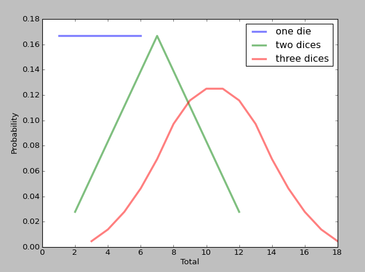

Counter是Python标准库提供的一个非常有用的容器，可以用来对序列中出现的各个元素，进行计数。这篇文章中，利用Counter来实现多元集合(MultiSets)、概率质量函数(PMFs)以及贝叶斯假设。
在Python代码中使用Counter，只需从collections包引入：
from collections import Counter
1.判断两个字符串是否由相同的字母集合调换顺序而成的（anagram）
def is_anagram(word1, word2):
"""Checks whether the words are anagrams.
word1: string
word2: string
returns: boolean
"""
return Counter(word1) == Counter(word2)
Counter如果传入的参数是字符串，就会统计字符串中每个字符出现的次数，如果两个字符串由相同的字母集合颠倒顺序而成，则它们Counter的结果应该是一样的。
2.多元集合(MultiSets)
multiset是相同元素可以出现多次的集合，Counter可以非常自然地用来表示multiset。并且可以将Counter扩展，使之拥有set的一些操作如is_subset。
class Multiset(Counter):
"""A multiset is a set where elements can appear more than once."""
def is_subset(self, other):
"""Checks whether self is a subset of other.
other: Multiset
returns: boolean
"""
for char, count in self.items():
if other[char] < count:
return False
return True
# map the <= operator to is_subset
__le__ = is_subset
3.概率质量函数
概率质量函数（probability mass function，简写为pmf）是离散随机变量在各特定取值上的概率。可以利用Counter表示概率质量函数。
class Pmf(Counter):
"""A Counter with probabilities."""
def normalize(self):
"""Normalizes the PMF so the probabilities add to 1."""
total = float(sum(self.values()))
for key in self:
self[key] /= total
def __add__(self, other):
"""Adds two distributions.
The result is the distribution of sums of values from the
two distributions.
other: Pmf
returns: new Pmf
"""
pmf = Pmf()
for key1, prob1 in self.items():
for key2, prob2 in other.items():
pmf[key1 + key2] += prob1 * prob2
return pmf
def __hash__(self):
"""Returns an integer hash value."""
return id(self)
def __eq__(self, other):
return self is other
def render(self):
"""Returns values and their probabilities, suitable for plotting."""
return zip(*sorted(self.items()))
normalize: 归一化随机变量出现的概率，使它们之和为1
add: 返回的是两个随机变量分布两两组合之和的新的概率质量函数
render: 返回按值排序的(value, probability)的组合对，方便画图的时候使用
下面以骰子（ps: 这个竟然念tou子。。。）作为例子。
d6 = Pmf([1,2,3,4,5,6])
d6.normalize()
d6.name = 'one die'
print(d6)
Pmf({1: 0.16666666666666666, 2: 0.16666666666666666, 3: 0.16666666666666666, 4: 0.16666666666666666, 5: 0.16666666666666666, 6: 0.16666666666666666})
使用add，我们可以计算出两个骰子和的分布：
d6_twice = d6 + d6
d6_twice.name = 'two dices'
for key, prob in d6_twice.items():
print(key, prob)
借助numpy.sum，我们可以直接计算三个骰子和的分布：
import numpy as np
d6_thrice = np.sum([d6]*3)
d6_thrice.name = 'three dices'
最后可以使用render返回结果，利用matplotlib把结果画图表示出来：
for die in [d6, d6_twice, d6_thrice]:
xs, ys = die.render()
pyplot.plot(xs, ys, label=die.name, linewidth=3, alpha=0.5)
pyplot.xlabel('Total')
pyplot.ylabel('Probability')
pyplot.legend()
pyplot.show()
结果如下： 
4.贝叶斯统计
我们继续用掷骰子的例子来说明用Counter如何实现贝叶斯统计。现在假设，一个盒子中有5种不同的骰子，分别是：4面、6面、8面、12面和20面的。假设我们随机从盒子中取出一个骰子，投出的骰子的点数为6。那么，取得那5个不同骰子的概率分别是多少？
（1）首先，我们需要生成每个骰子的概率质量函数：
def make_die(num_sides):
die = Pmf(range(1, num_sides+1))
die.name = 'd%d' % num_sides
die.normalize()
return die
dice = [make_die(x) for x in [4, 6, 8, 12, 20]]
print(dice)
（2）接下来，定义一个抽象类Suite。Suite是一个概率质量函数表示了一组假设(hypotheses)及其概率分布。Suite类包含一个bayesian_update函数，用来基于新的数据来更新假设(hypotheses)的概率。
class Suite(Pmf):
"""Map from hypothesis to probability."""
def bayesian_update(self, data):
"""Performs a Bayesian update.
Note: called bayesian_update to avoid overriding dict.update
data: result of a die roll
"""
for hypo in self:
like = self.likelihood(data, hypo)
self[hypo] *= like
self.normalize()
其中的likelihood函数由各个类继承后，自己实现不同的计算方法。
（3）定义DiceSuite类，它继承了类Suite。
class DiceSuite(Suite):
def likelihood(self, data, hypo):
"""Computes the likelihood of the data under the hypothesis.
data: result of a die roll
hypo: Die object
"""
return hypo[data]
并且实现了likelihood函数，其中传入的两个参数为： data: 观察到的骰子掷出的点数，如本例中的6 hypo: 可能掷出的那个骰子
（4）将第一步创建的dice传给DiceSuite，然后根据给定的值，就可以得出相应的结果。
dice_suite = DiceSuite(dice)
dice_suite.bayesian_update(6)
for die, prob in sorted(dice_suite.items()):
print die.name, prob
d4 0.0
d6 0.392156862745
d8 0.294117647059
d12 0.196078431373
d20 0.117647058824
正如，我们所期望的4个面的骰子的概率为0（因为4个面的点数只可能为0~4），而6个面的和8个面的概率最大。 现在，假设我们又掷了一次骰子，这次出现的点数是8，重新计算概率：
dice_suite.bayesian_update(8)
for die, prob in sorted(dice_suite.items()):
print die.name, prob
d4 0.0
d6 0.0
d8 0.623268698061
d12 0.277008310249
d20 0.0997229916898
现在可以看到6个面的骰子也被排除了。8个面的骰子是最有可能的。
以上的几个例子，展示了Counter的用处。实际中，Counter的使用还比较少，如果能够恰当的使用起来将会带来非常多的方便。
Reference： Using Counters : http://nbviewer.ipython.org/github/AllenDowney/PythonCounterPmf/blob/master/PythonCounterPmf.ipynb
Comments